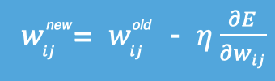

2.3 深度学习的优化方法
学习目标
- 知道梯度下降算法
- 理解神经网络的链式法则
- 掌握反向传播算法（BP算法）
- 知道梯度下降算法的优化方法
- 了解学习率退火
1.梯度下降算法【回顾】
梯度下降法简单来说就是一种寻找使损失函数最小化的方法。大家在机器学习阶段已经学过该算法，所以我们在这里就简单的回顾下，从数学上的角度来看，梯度的方向是函数值增长速度最快的方向，那么梯度的反方向就是函数值减少最快的方向，所以有：

其中，η是学习率，如果学习率太小，那么每次训练之后得到的效果都太小，增大训练的时间成本。如果，学习率太大，那就有可能直接跳过最优解，进入无限的训练中。解决的方法就是，学习率也需要随着训练的进行而变化。

在上图中我们展示了一维和多维的损失函数，损失函数呈碗状。在训练过程中损失函数对权重的偏导数就是损失函数在该位置点的梯度。我们可以看到，沿着负梯度方向移动，就可以到达损失函数底部，从而使损失函数最小化。这种利用损失函数的梯度迭代地寻找局部最小值的过程就是梯度下降的过程。
根据在进行迭代时使用的样本量，将梯度下降算法分为以下三类：
实际中使用较多的是小批量的梯度下降算法，在tf.keras中通过以下方法实现：
tf.keras.optimizers.SGD(
learning_rate=0.01, momentum=0.0, nesterov=False, name='SGD', **kwargs
)
例子：
# 导入相应的工具包
import tensorflow as tf
# 实例化优化方法：SGD
opt = tf.keras.optimizers.SGD(learning_rate=0.1)
# 定义要调整的参数
var = tf.Variable(1.0)
# 定义损失函数：无参但有返回值
loss = lambda: (var ** 2)/2.0
# 计算梯度，并对参数进行更新，步长为 `- learning_rate * grad`
opt.minimize(loss, [var]).numpy()
# 展示参数更新结果
var.numpy()
更新结果为：
# 1-0.1*1=0.9
0.9
在进行模型训练时，有三个基础的概念：
实际上，梯度下降的几种方式的根本区别就在于 Batch Size不同,，如下表所示：
注：上表中 Mini-Batch 的 Batch 个数为 N / B + 1 是针对未整除的情况。整除则是 N / B。
假设数据集有 50000 个训练样本，现在选择 Batch Size = 256 对模型进行训练。
- 每个 Epoch 要训练的图片数量：50000
- 训练集具有的 Batch 个数：50000/256+1=196
- 每个 Epoch 具有的 Iteration 个数：196
- 10个 Epoch 具有的 Iteration 个数：1960
2.反向传播算法（BP算法）
利用反向传播算法对神经网络进行训练。该方法与梯度下降算法相结合，对网络中所有权重计算损失函数的梯度，并利用梯度值来更新权值以最小化损失函数。在介绍BP算法前，我们先看下前向传播与链式法则的内容。
2.1 前向传播与反向传播
前向传播指的是数据输入的神经网络中，逐层向前传输，一直到运算到输出层为止。
在网络的训练过程中经过前向传播后得到的最终结果跟训练样本的真实值总是存在一定误差，这个误差便是损失函数。想要减小这个误差，就用损失函数ERROR，从后往前，依次求各个参数的偏导，这就是反向传播（Back Propagation）。
2.2 链式法则
反向传播算法是利用链式法则进行梯度求解及权重更新的。对于复杂的复合函数，我们将其拆分为一系列的加减乘除或指数，对数，三角函数等初等函数，通过链式法则完成复合函数的求导。为简单起见，这里以一个神经网络中常见的复合函数的例子来说明 这个过程. 令复合函数 𝑓(𝑥; 𝑤, 𝑏) 为:

其中x是输入数据，w是权重，b是偏置。我们可以将该复合函数分解为：
并进行图形化表示，如下所示：
整个复合函数 𝑓(𝑥; 𝑤, 𝑏) 关于参数 𝑤 和 𝑏 的导数可以通过 𝑓(𝑥; 𝑤, 𝑏) 与参数 𝑤 和 𝑏 之间路径上所有的导数连乘来得到，即：

以w为例，当 𝑥 = 1, 𝑤 = 0, 𝑏 = 0 时，可以得到：
注意：常用函数的导数：
2.3 反向传播算法
反向传播算法利用链式法则对神经网络中的各个节点的权重进行更新。我们通过一个例子来给大家介绍整个流程，假设当前前向传播的过程如下图所以：
- 计算损失函数，并进行反向传播：

- 计算梯度值：
输出层梯度值：

隐藏层梯度值：

偏置的梯度值：
参数更新：
输出层权重：
隐藏层权重：
偏置更新：
重复上述过程完成模型的训练，整个流程如下表所示：
3.梯度下降优化方法
梯度下降算法在进行网络训练时，会遇到鞍点，局部极小值这些问题，那我们怎么改进SGD呢？在这里我们介绍几个比较常用的

3.1 动量算法（Momentum）
动量算法主要解决鞍点问题。在介绍动量法之前，我们先来看下指数加权平均数的计算方法。
指数加权平均
假设给定一个序列，例如北京一年每天的气温值，图中蓝色的点代表真实数据，
这时温度值波动比较大，那我们就使用加权平均值来进行平滑，如下图红线就是平滑后的结果：

计算方法如下所示：

其中Yt为 t 时刻时的真实值，St为t加权平均后的值，β为权重值。红线即是指数加权平均后的结果。
上图中β设为0.9，那么指数加权平均的计算结果为：
那么第100天的结果就可以表示为：
动量梯度下降算法
动量梯度下降（Gradient Descent with Momentum）计算梯度的指数加权平均数，并利用该值来更新参数值。动量梯度下降法的整个过程为，其中β通常设置为0.9：

与原始的梯度下降算法相比，它的下降趋势更平滑。

在tf.keras中使用Momentum算法仍使用功能SGD方法，但要设置momentum参数，实现过程如下：
# 导入相应的工具包
import tensorflow as tf
# 实例化优化方法：SGD 指定参数beta=0.9
opt = tf.keras.optimizers.SGD(learning_rate=0.1, momentum=0.9)
# 定义要调整的参数，初始值
var = tf.Variable(1.0)
val0 = var.value()
# 定义损失函数
loss = lambda: (var ** 2)/2.0
#第一次更新：计算梯度，并对参数进行更新，步长为 `- learning_rate * grad`
opt.minimize(loss, [var]).numpy()
val1 = var.value()
# 第二次更新：计算梯度，并对参数进行更新，因为加入了momentum,步长会增加
opt.minimize(loss, [var]).numpy()
val2 = var.value()
# 打印两次更新的步长
print("第一次更新步长={}".format((val0 - val1).numpy()))
print("第二次更新步长={}".format((val1 - val2).numpy()))
结果为：
第一次更新步长=0.10000002384185791
第二次更新步长=0.18000000715255737
另外还有一种动量算法Nesterov accelerated gradient(NAG)，使用了根据动量项预先估计的参数，在Momentum的基础上进一步加快收敛，提高响应性，该算法实现依然使用SGD方法，要设置nesterov设置为True.
3.2 AdaGrad
AdaGrad算法会使用一个小批量随机梯度 按元素平方的累加变量 。在首次迭代时，AdaGrad将 中每个元素初始化为0。在t次迭代，首先将小批量随机梯度 按元素平方后累加到变量st：
其中⊙是按元素相乘。接着，我们将目标函数自变量中每个元素的学习率通过按元素运算重新调整一下：
其中 是学习率， 是为了维持数值稳定性而添加的常数，如。这里开方、除法和乘法的运算都是按元素运算的。这些按元素运算使得目标函数自变量中每个元素都分别拥有自己的学习率。
在tf.keras中的实现方法是：
tf.keras.optimizers.Adagrad(
learning_rate=0.001, initial_accumulator_value=0.1, epsilon=1e-07
)
例子是：
# 导入相应的工具包
import tensorflow as tf
# 实例化优化方法：SGD
opt = tf.keras.optimizers.Adagrad(
learning_rate=0.1, initial_accumulator_value=0.1, epsilon=1e-07
)
# 定义要调整的参数
var = tf.Variable(1.0)
# 定义损失函数：无参但有返回值
def loss(): return (var ** 2)/2.0
# 计算梯度，并对参数进行更新，
opt.minimize(loss, [var]).numpy()
# 展示参数更新结果
var.numpy()
3.3 RMSprop
AdaGrad算法在迭代后期由于学习率过小，较难找到最优解。为了解决这一问题，RMSProp算法对AdaGrad算法做了一点小小的修改。
不同于AdaGrad算法里状态变量 是截至时间步t所有小批量随机梯度 按元素平方和，RMSProp（Root Mean Square Prop）算法将这些梯度按元素平方做指数加权移动平均：

其中 同样是为了维持数值稳定的一个常数。最终自变量每个元素的学习率在迭代过程中就不再一直降低。RMSProp 有助于减少抵达最小值路径上的摆动，并允许使用一个更大的学习率 ，从而加快算法学习速度。
在tf.keras中实现时，使用的方法是：
tf.keras.optimizers.RMSprop(
learning_rate=0.001, rho=0.9, momentum=0.0, epsilon=1e-07, centered=False,
name='RMSprop', **kwargs
)
例子：
# 导入相应的工具包
import tensorflow as tf
# 实例化优化方法RMSprop
opt = tf.keras.optimizers.RMSprop(learning_rate=0.1)
# 定义要调整的参数
var = tf.Variable(1.0)
# 定义损失函数：无参但有返回值
def loss(): return (var ** 2)/2.0
# 计算梯度，并对参数进行更新，
opt.minimize(loss, [var]).numpy()
# 展示参数更新结果
var.numpy()
输出结果为：
0.6837723
3.4 Adam
Adam 优化算法（Adaptive Moment Estimation，自适应矩估计）将 Momentum 和 RMSProp 算法结合在一起。Adam算法在RMSProp算法基础上对小批量随机梯度也做了指数加权移动平均。
假设用每一个 mini-batch 计算 dW、db，第t次迭代时：
其中 l 为某一层，t 为移动平均迭代的次数。
Adam 算法的参数更新：
建议的参数设置的值：
- 学习率α：需要尝试一系列的值，来寻找比较合适的
- β1：常用的缺省值为 0.9
- β2：建议为 0.999
- ϵ：默认值1e-8
在tf.keras中实现的方法是：
tf.keras.optimizers.Adam(
learning_rate=0.001, beta_1=0.9, beta_2=0.999, epsilon=1e-07
)
例子：
# 导入相应的工具包
import tensorflow as tf
# 实例化优化方法Adam
opt = tf.keras.optimizers.Adam(learning_rate=0.1)
# 定义要调整的参数
var = tf.Variable(1.0)
# 定义损失函数：无参但有返回值
def loss(): return (var ** 2)/2.0
# 计算梯度，并对参数进行更新，
opt.minimize(loss, [var]).numpy()
# 展示参数更新结果
var.numpy()
结果为：
0.90000033
4.学习率退火
在训练神经网络时，一般情况下学习率都会随着训练而变化，这主要是由于，在神经网络训练的后期，如果学习率过高，会造成loss的振荡，但是如果学习率减小的过快，又会造成收敛变慢的情况。
4.1 分段常数衰减
分段常数衰减是在事先定义好的训练次数区间上，设置不同的学习率常数。刚开始学习率大一些，之后越来越小，区间的设置需要根据样本量调整，一般样本量越大区间间隔应该越小。

在tf.keras中对应的方法是：
tf.keras.optimizers.schedules.PiecewiseConstantDecay(boundaries, values)
参数：
- Boundaries: 设置分段更新的step值
- Values: 针对不用分段的学习率值
例子：对于前100000步，学习率为1.0，对于接下来的100000-110000步，学习率为0.5，之后的步骤学习率为0.1
# 设置的分段的step值
boundaries = [100000, 110000]
# 不同的step对应的学习率
values = [1.0, 0.5, 0.1]
# 实例化进行学习的更新
learning_rate_fn = tf.keras.optimizers.schedules.PiecewiseConstantDecay(
boundaries, values)
4.2 指数衰减
指数衰减可以用如下的数学公式表示,

其中，t表示迭代次数，α0,k是超参数

在tf.keras中的实现是：
tf.keras.optimizers.schedules.ExponentialDecay(initial_learning_rate, decay_steps, decay_rate)
具体的实现是：
def decayed_learning_rate(step):
return initial_learning_rate * decay_rate ** (step / decay_steps)
参数：
Initial_learning_rate: 初始学习率，α0
decay_steps: k值
decay_rate: 指数的底
4.3 1/t衰减
1/t衰减可以用如下的数学公式表示：
其中，t表示迭代次数，α0,k是超参数
在tf.keras中的实现是：
tf.keras.optimizers.schedules.InverseTimeDecay(initial_learning_rate, decay_steps, decay_rate)
具体的实现是：
def decayed_learning_rate(step):
return initial_learning_rate / (1 + decay_rate * step / decay_step)
参数：
Initial_learning_rate: 初始学习率，α0
decay_step/decay_steps: k值
总结
知道梯度下降算法
一种寻找使损失函数最小化的方法：批量梯度下降，随机梯度下降，小批量梯度下降
理解神经网络的链式法则
复合函数的求导
掌握反向传播算法（BP算法）
神经网络进行参数更新的方法
知道梯度下降算法的优化方法
动量算法，adaGrad,RMSProp,Adam
了解学习率退火
分段常数衰减，指数衰减，1/t衰减